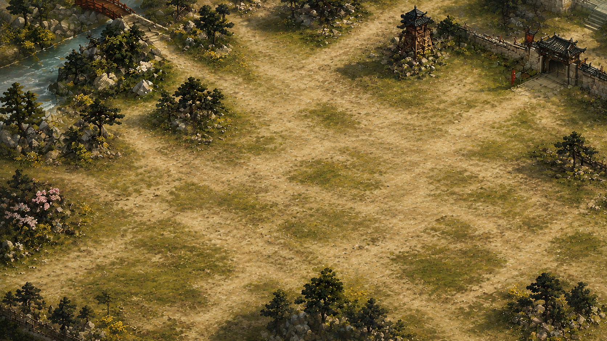
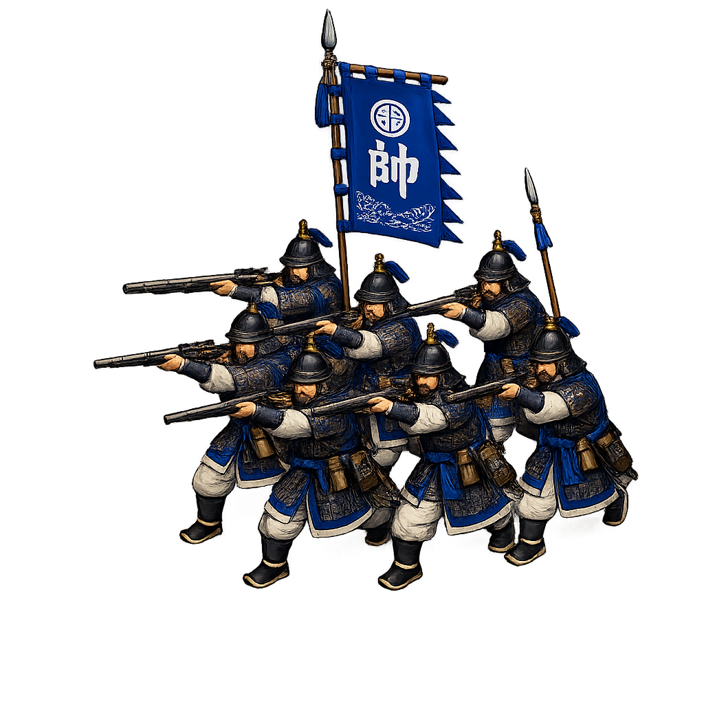
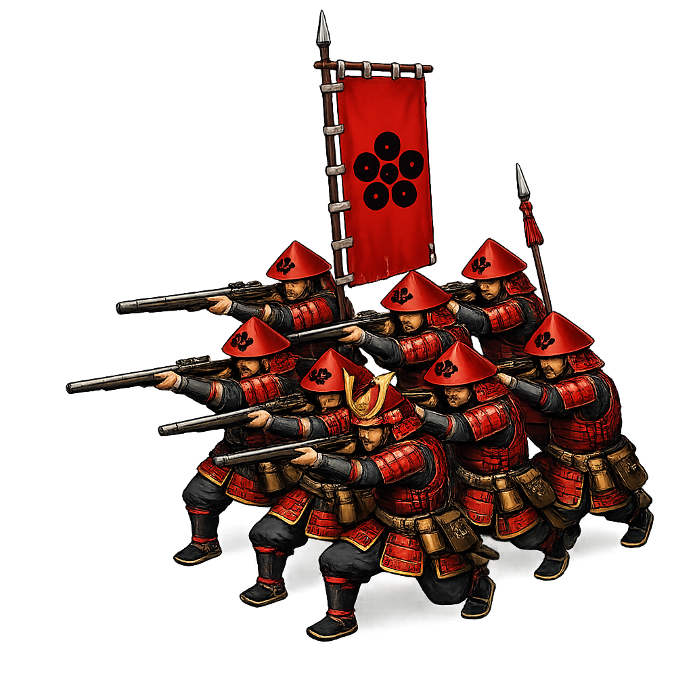
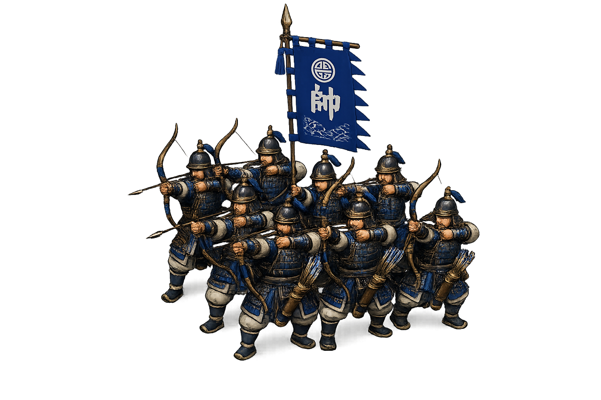
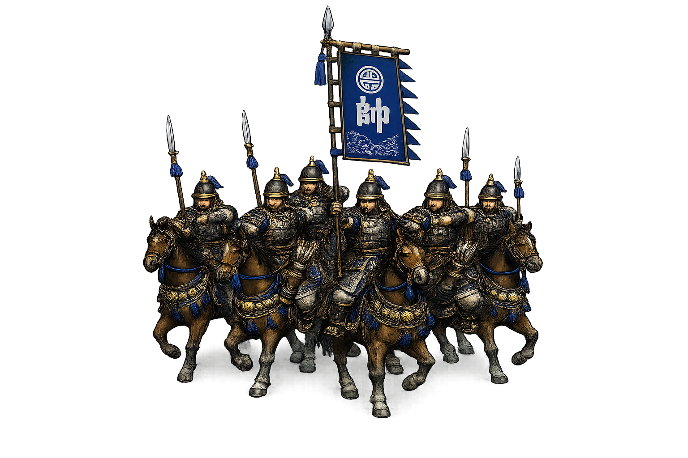
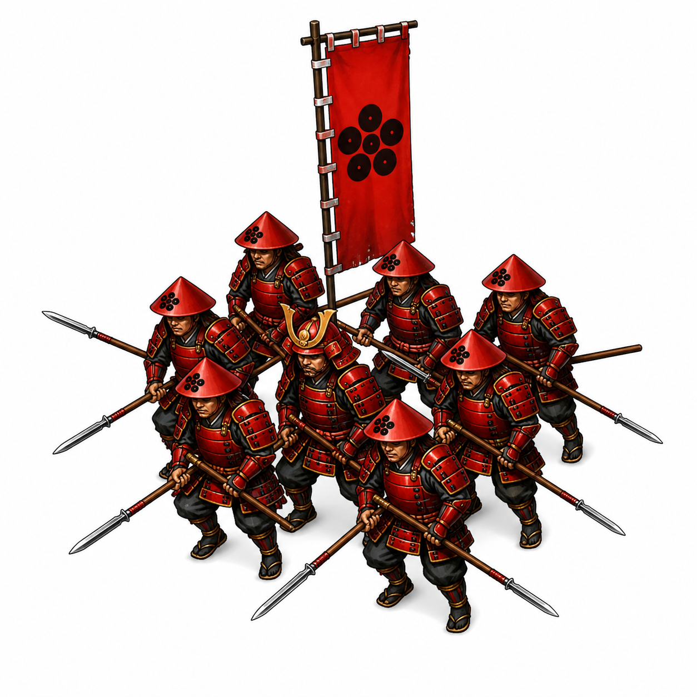

EASTWAR 개발일지 #005
전투를 만들다 — 코드보다 먼저 전장이 섰다
2026년 5월 1일#004에서 구조를 정했다. Core는 두뇌, Phaser는 화면, HTML은 정보창. 이제 실제로 만들 차례였다.
솔직히 말하면, 설계를 마친 날 밤에도 확신이 없었다. 이 구조가 진짜 작동할까? 그 답은 직접 만들어보는 수밖에 없었다.
먼저 길을 뚫었다
v0.2 전투씬 MVP첫 번째 목표는 단순했다. 전투 화면에 들어갔다가 결과를 들고 다시 월드맵으로 돌아오는 루트. 게임처럼 보이려면 이 흐름이 먼저 살아야 했다.
월드맵에서 공격 → 전투 화면 진입 → Phaser 전투 캔버스 표시 → 승패 처리 → 월드맵 복귀 → 점령 반영. 이 루프가 완성되는 순간, 처음으로 "게임 같다"는 느낌이 왔다. 평양 하나를 점령했을 뿐인데.
Godot에서 만든 전투를 웹으로 옮겼다
v0.2-1 · v0.2-2다음은 진짜 전투였다. 이전에 Godot 엔진으로 만들어뒀던 그리드 기반 전투 시스템을 Phaser로 이식하는 작업. 유닛 선택 → 이동 가능 칸 표시 → 이동 → 적 공격 → 적 반응 → 승리/복귀. 이 흐름이 웹에서 돌아가기 시작했다.
그리고 영웅이 등장했다. 이순신, 정도전, 노부나가, 겐신. 2:2로 맞붙는 첫 번째 전투였다.
EASTWAR가 삼국지와 다른 핵심이 여기서 나온다. 단순한 유닛이 아니라, 각자 고유한 특기를 가진 영웅들. 이순신의 학익진 포격, 정도전의 개혁령, 노부나가의 화승총 사격, 겐신의 돌격. 이건 다른 장수가 배울 수 있는 일반 스킬이 아니다. 오직 그 영웅만 쓸 수 있는 고유특기다.
Godot에서 잡아뒀던 영웅별 수치 — 병력, 무력, 지력, 공격, 방어, 이동 — 를 그대로 웹판으로 옮겼다. 공격과 방어도 단순 고정값이 아니라 무력과 지력 기반 산식으로 계산된다. 전투마다 숫자가 살아 움직이는 느낌이 나기 시작했다.
전투가 깊어졌다
v0.2-3 · v0.2-4Godot 전투에서 "밸런스가 미쳤다"는 느낌이 나던 이유가 있었다. 방향이었다. 전방에서 치는 것과 측면, 후방에서 치는 것이 다르다. 뒤를 잡으면 1.3배의 피해. 이 하나가 전술의 깊이를 만든다. 거기에 반격과 방어 태세, 대기까지 붙었다. 공격만 하는 게임이 아니라, 언제 지키고 언제 기다릴지를 계산해야 하는 게임이 됐다.
그리고 정도전 같은 지력형 영웅이 빛나는 순간이 왔다. 책략 시스템 — 혼란과 동요. 지력이 높을수록 더 오래, 더 확실하게 상대를 흔들 수 있다. 싸움을 힘으로만 이기는 게 아니라는 것을 게임이 보여주기 시작했다.
AI도 바보가 아니어야 했다
v0.2-5자동전투를 넣으면서 원칙이 하나 생겼다. AI가 멍청하면 게임이 재미없다. 영웅마다 성향을 나눴다. 이순신은 원거리에서 포격을 노리고, 정도전은 아군을 지원하고, 겐신은 앞으로 돌격한다. 자동전투를 켜도 영웅들이 제 역할을 하는 것처럼 보이게.
전투판이 눈에 보이기 시작했다
v0.2-6 · v0.2-6b마지막은 비주얼이었다. 원으로만 표시되던 유닛 자리에 부대 이미지가 들어왔다. 전투 배경도 깔렸다 — 강과 나무, 성문과 망루가 있는 동아시아풍 전장.
이 단계에서 중요한 건 하나였다. 아군과 적군이 눈으로 구분되는 것. 파란 깃발의 부대가 아군이고, 붉은 깃발의 부대가 적군이다. 어떤 나라 군대인지는 나중 문제였다. 먼저 전장이 눈에 읽혀야 했다.






레이아웃도 잡혔다. 왼쪽 전투 로그, 중앙 전투판, 오른쪽 유닛 정보, 하단 커맨드 바. 화면이 정돈되자 전투가 처음으로 "게임처럼 보였다."
전투 엔진의 기초가 완성됐다. 다음은 월드맵의 적 턴 — 이제 상대도 쳐들어온다.